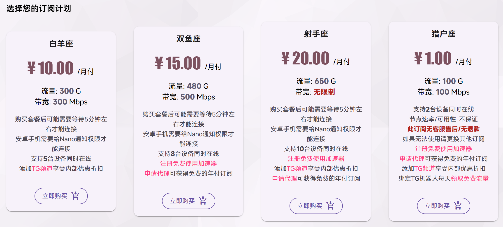

从当前任务出发
你现在要解决什么
每个入口直达正式文档中的对应章节，不需要在三个站点反复寻找同一段内容。
产品概览
先看边界，再看价格
NanoCloud 的核心优势是低月付、多地区和低维护成本。它使用共享出口，适合日常访问、流媒体和备用通路，但不能替代固定住宅 IP、独享 IP 或企业 SLA。
- 付费周期
- 当前公开结算页显示月付
- 客户端
- Android、Windows、macOS 与多种第三方客户端
- 节点类型
- “通用”用于 IPv4；“流量”需要完整 IPv6 支持
- 最终依据
- 价格、节点和优惠以控制台实时信息为准

适合与不适合
不要让低价替你做决定
更适合
- 希望用月付降低试错成本
- 需要多地区、大流量或多设备共享
- 愿意在自己的网络中测试晚高峰
- 需要一个低成本备用通路
需要换方案
- 必须长期使用固定或独享出口 IP
- 需要企业 SLA、审计或明确赔付承诺
- 把“原生 IP”视为永不验证的保证
- 无法接受节点、价格和可用性变化
还在机场、自建 VPS 或链式代理之间比较？完整的成本与风险表在方案与成本中维护。